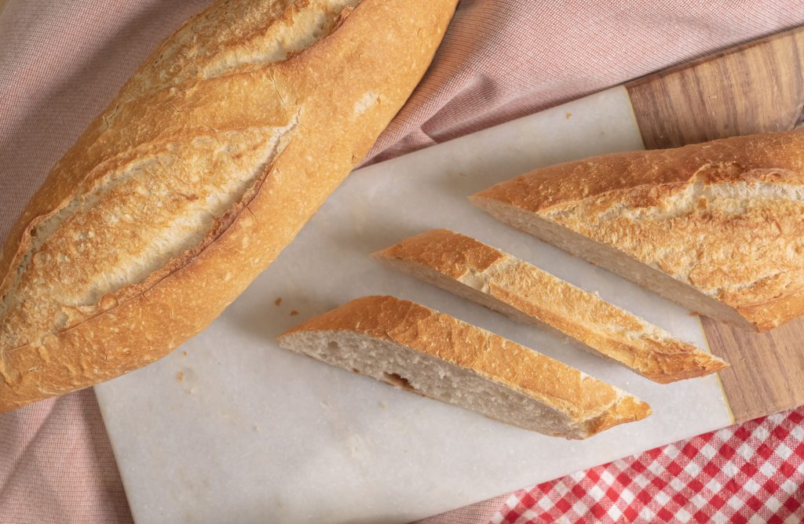

Ingredientes:
- 500 gramos de harina de fuerza
- 10 gramos de sal
- 300 ml de agua tibia
- 5 gramos de levadura fresca o de panadería (la venden en panaderías o en cualquier supermercado en la zona de refrigerados, normalmente junto a la mantequilla)
Preparacion:
- Echamos en un cazo 300 ml de agua y calentamos. Dejamos el agua al fuego pero no mucho rato, lo que buscamos es que el agua quede tibia. En cuanto esté tibia apagamos el fuego.
- En un bol grande, donde podamos amasar, sin necesidad de tener que hacer cosas raras con las manos, echamos 500 gr de harina normal.
- Añadiremos 10 gramos de sal para que quede bien equilibrado nuestro pan pero recuerda que puedes jugar un poco con la dosis para lograr tu gusto personalizado.
- Usamos la levadura fresca Levanova. Ojo, puedes usar otros tipos de levadura fresca sin problemas
- Vamos a añadir al bol 4 cucharaditas de aceite de oliva para dar un toque especial. Y luego añades un par de cucharaditas de azúcar blanco. Primero hazlo así y pruebas el resultado.
- Ve añadiendo agua tibia al bol y vas amasando mezclando a mano bien los ingredientes. Hazlo durante aproximadamente 10 minutos. Luego sacas la masa del bol y truco: espolvorea con algo de harina la mesa. Sigues amasando unos minutos metiendo aire y plegando la masa, metiendo aire y plegando la masa. Dale a la masa una forma redondeada y déjala de nuevo en el bol.
- La levadura fresca hace su magia, déjala actuar durante una hora. Sacamos la masa del bol, amasamos de nuevo un poco, metiendo y sacando aire. Luego, divide la masa en cuantas piezas quieras y dalas la forma que prefieras. Deja reposar estas piezas sobre un trapo enharinado y tapadas con otro trapo durante una hora
- Precalentamos el horno a 230º, mete una bandeja adicional en la parte inferior del horno desde el inicio de la precocción. Luego, bajamos un poco la temperatura y metemos el pan al horno, aproximadamente durante 40 minutos a 200 grados (depende del tamaño de las piezas que hayas hecho). Cuando pasen esos 40 minutos, la superficie del pan debería tomar un color dorado y listo sácalo del horno, deja que se enfríe y ¡buen provecho!